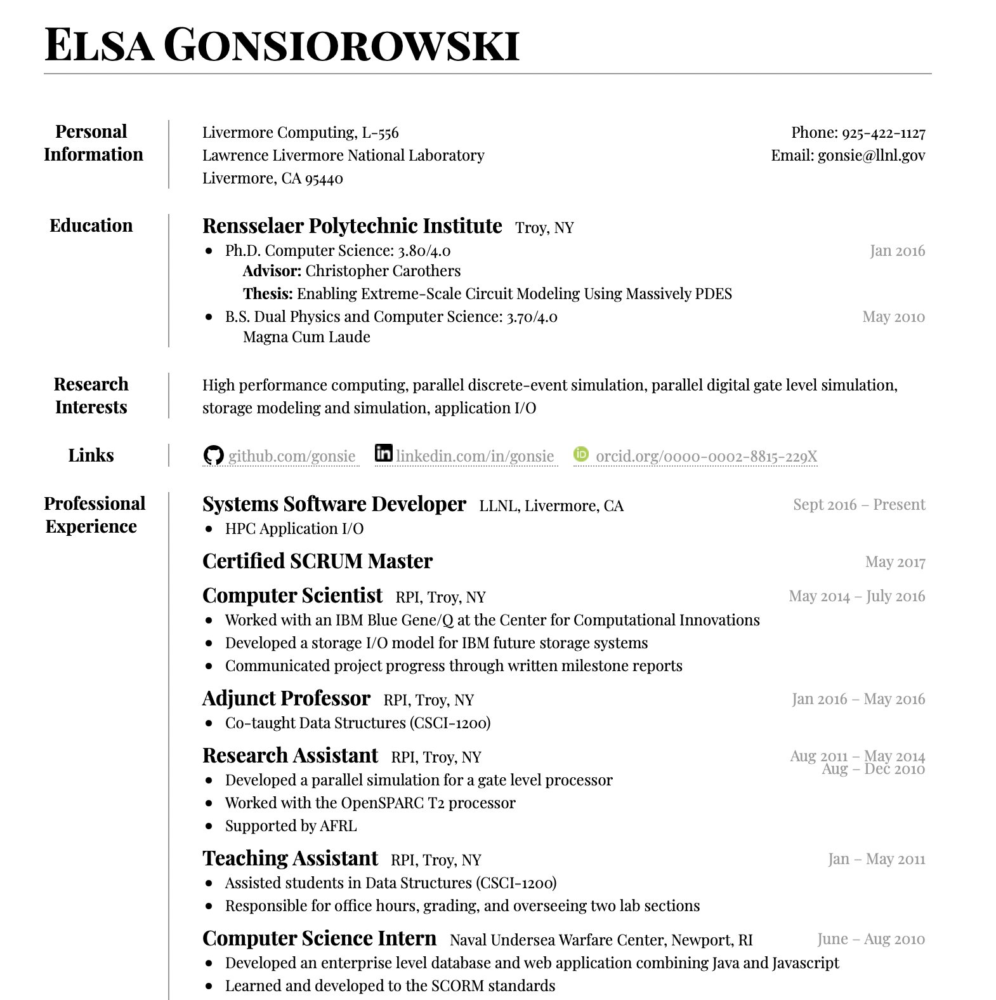
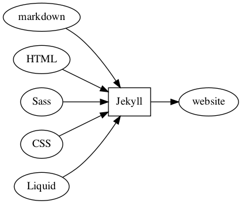

Building A Personal Website
(HPC Cluster Academy)
Elsa Gonsiorowski
July 19, 2021
Created: 2021-07-06 Tue 17:24
1 Goals
- Set up a markdown and web development environment on your machine
- Refresh your resume
- Build a personal website
Follow along: https://www.gonsie.com/gh-resume.html
2 Schedule
| 1-1:30 | About Me & Setup |
| 130-230 | Crash course in HTML & CSS |
| 230-330 | Markdown & Your Resume |
| 3:30-4 | Deploying Static Websites |
| 4-5 | Build Your Website! |
3 About Me & Setup
3.1 Elsa Gonsiorowski
- Joined LLNL / LC in 2016
- HPC I/O Specialist
- Working on SCR: Scalable Checkpoint Restart
- Part of the ECP IDEAS Team working on PSIP
- Excited about emacs, static websites, cmake
3.2 gonsie.com

3.3 github.com/gonsie

3.4 gonsie.com/cv.html

3.5 Setup: Things You'll Need
- Resume
- Text editor with Markdown, HTML, CSS support
- GitHub account
- Package manager to install Jekyll (optional)
3.6 Text Editor Support
- Syntax highlighting, checking
- Indentation
- Export / preview support (may require additional software)
- Snippets
- Colors
3.7 Markdown
- Emacs (markdown-mode / MELPA)
- Vim (vim-markdown)
- SublimeText (packages: markdown)
- Atom (packages: markdown)
- VSCode (extensions: markdown)
- Web-based Dillinger
3.8 Jekyll
3.9 Activity: Setup (10 minutes)
4 HTML & CSS
4.1 Computer Languages
A markup language is a system for annotating a document in a way that is syntactically distinguishable from the text.
A style sheet language, or style language, expresses the presentation of structured documents.
4.2 Computer Languages
4.3 Markup Languages
4.4 Beautiful Web Documents
- HTML + CSS
- Structure and style a document
- Understood by browsers
- HTML Elements are marked at the beginning and end with a tag
- HTML Elements have attributes which provide additional information
- CSS Selects an element and sets properties
- W3Schools is a great reference
4.5 Example – HTML
<!DOCTYPE html>
<html>
<head>
<link rel="stylesheet" href="basic.css"/>
<title>My web page</title>
</head>
<body>
<p class="ugly">This is some text on my webpage</p>
</body>
</html>
4.6 Example – CSS
body {
color: blue;
}
p.ugly {
border-bottom: 1px dotted #999;
}
4.7 Example – Rendered

4.8 Displaying a Web page
- Parse HTML to construct DOM tree (Document Object Model)
- Render tree construction / apply CSS
- Layout the elements
- Draw the page on the screen
4.9 Activity: Make a Web page (10 min)
- Edit the basic HTML + CSS pages with your editor (basic.html and basic.css)
- "Open" the basic.html file using your browser
- Add some more HTML and/or CSS
Do you need to run the web server to view the page you created? What is the URL of your page?
5 Markdown & Your Resume
5.1 Markdown
- Designed by John Gruber (Daring Fireball)
- Defined syntax for translating text to HTML.
- A superset of HTML
- Used extensively in software communities.
5.2 Markdown to HTML

5.3 Markdown Syntax 1
# h1 Heading
## h2 Heading
### h3 Heading
---
Emphasis with **bold**, *italic*, or ~~strikethrough~~ text.
> Blockquote for included text
[Also links](http://example.com)
5.4 Markdown Syntax 2
1. Numbered Lists
- Unordered lists
* mixed marks
+ like this
7. Only the first number matters
Support for `inline code` and code blocks:
```
for (int i = 0; i < 100; i++) printf("Hello World!\n");
```
5.5 Markdown Syntax Example

5.6 Markdown Style Example

5.7 Markdown to HTML
Converters have their own rules.
5.8 Additional Markdown Rules
- GitHub-flavored-markdown (GFM) includes task lists and emojis.
- kramdown includes better handling of code blocks
- pandoc converts to/from any number of markup formats
5.9 Activity: Practice Markdown (20 min)
Practice writing markdown syntax by re-writing your resume in markdown.
- Your name is a level 1 heading
- Sections are level 2 headings
- Different companies are level 3 headings
- Be sure to use lists and emphasis
- Additional resources: Markdown Guide
6 Static Website
6.1 Static vs Dynamic Websites
- Web pages with fixed content
- No backing database / dynamic server
- No way to "log in" to the site
6.2 Jekyll
- Static website generator
- Structured on top of basic markdown
- Generate HTML and CSS from source code
6.3 Jekyll

6.4 Jekyll Front Matter
- Jekyll parses markdown pages with extra front matter
- Must be on line 1 of your
.mdfile - Pass information about the page to jekyll to allow for proper rendering
- Must be on line 1 of your
- Use this front matter on your
resume.mdfile:
---
layout: resume
title: "My Awesome Resume"
---
6.5 Liquid
- Templating language
- Allows hierarchical construction of a jekyll web page
- Access to variables, programming constructs
6.6 GitHub Pages
- FREE websites for you and your projects
- Open source repos get free website hosting
- Can serve basic HTML or Jekyll site
6.7 Activity: Start your website (15 min)
- Fork https://github.com/gonsie/jekyll-resume
- Rename to username.github.io
- Make sure GitHub Pages is turned on (from the master branch)
- Clone your repo and update the resume
- Push your changes
- Visit your website!
7 Building a Website
7.1 Web Conventions
https://gonsie.com
7.2 Web Conventions
https://gonsie.github.io/index.html
7.3 GitHub Pages
username.github.iousername.github.io/repo- can support custom domains
7.4 Building Your Personal Brand
- How you present yourself to the world
- Username, profile image(s), profile information
- Join the blogosphere / independent web and own your content
- Build your own network with RSS
7.5 Personal Site Demo
7.6 Activity: Build Your Web Site (60 min)
- Look up a domain (try namecheap or hover). How much does it cost?
- Find a theme (jekyllthemes.org) and tweak it for your site
- Write an index and/or about page
- Brainstorm some blog posts with your neighbor
- Write a blog post
- Add an RSS feed to your site (hint: can be done in
_config.yml) - Use Liquid to add a list of blog posts to the homepage
- Enable HTTPS on your site
8 Fun
8.1 Have Fun
- This page is a truly naked, brutalist html quine.
- 58 bytes of css to look great nearly everywhere
- Get Social on reddit or dev.to
8.2 Activity: GitHub Secret
- Create a new repo called username
- Add a
README.mdfile - Visit your GitHub Profile (
github.com/username)